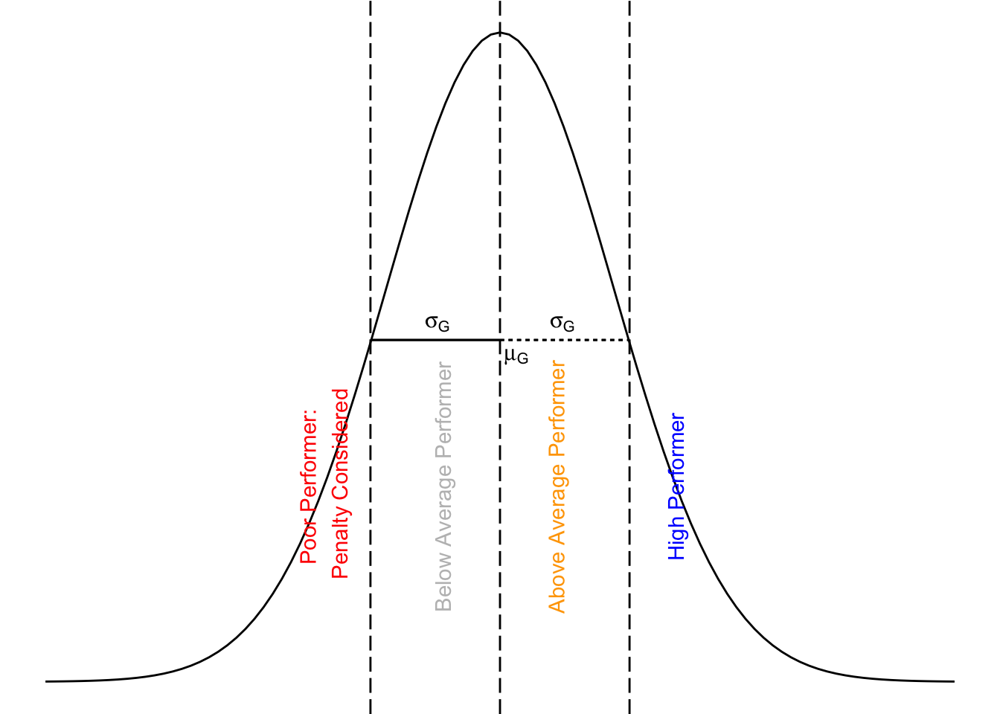

| Submission | Weight |
|---|---|
| Final Project Report | 75% |
| Final Project Presentation | 25% |
4 Evaluation
Evaluation of an industry project follows authentic assessment, i.e., a judgment is made about students’ performance in applying knowledge and skills in solving real business problems. Furthermore, while the instructor’s direct goal in evaluation is judging the students’ performance in industry project, she also makes an indirect assessment of students’ participation in other broader elements that influence their performance. In other words, industry project will have features of continuous assessment.
Continuous Assessment
Continuous assessment evaluates students’ learning progress throughout the semester. It has following features:
Formative: Instructors conduct an assessment as the learning process takes place, and is used to inform or influence the learning process. Instructors may not provide specific grades to different stages of the learning journey; however, when they grade the final outcomes, they will account for students’ performance in learning activities throughout the semester.
Criterion-referenced: Instructors set multiple milestones throughout the semester to ensure students progress.
Continuous assessment in industry project will measure student’s learning outcomes using the following criteria.
- Identifying business problems.
- Solving business problems logically using science and technology.
- Making decisions using critical and creative thinking.
- Working effectively with others as member of team, client, group, and course.
- Organizing and managing the project responsibly.
- Collecting, analyzing, organizing, and critically evaluating data or information.
- Communicating efficiently using oral and written skills.
- Linking different elements of business problems coherently.
4.1 Grading
To simplify the grading process, each group will receive marks for the final project report and presentation. Table 4.1 shows the weights for these submissions.
Grades of these submissions will consider each group’s activities throughout the semester toward the industry project.
Each student from the group will
get the same gradesfor the final project report and presentation that the group receives unless anindividual grade penaltyis applied to that student from the group.
4.2 Assessment Criteria
Table 4.2 outlines general assessment criteria used for assessing final project report.
| Criteria | Points | Details |
|---|---|---|
| Feasibility | 30 |
|
| Professionalism | 20 |
|
| Innovativeness | 20 |
|
| Quantification | 20 |
|
| Collaboration | 10 |
|
Table 4.3 outlines general assessment criteria used for assessing final project report.
| Criteria | Points | Details |
|---|---|---|
| Oral Presentation | 35 |
|
| Presentation Layout | 20 |
|
| Communication Skills | 30 |
|
| Question and Answers | 15 |
|
Joint Evaluation
Your grades in the industry project will be based on assessments from the following:
- The client
- The course instructor, and
- Your group’s assessment of your individual contribution to the project
Other General Considerations
- Content
- Structure
- Layout
- Language
- Referencing
4.3 Individual Grade Penalty
Individual grade penalty will be applied to those students whose contribution to the group is not optimal. The peer evaluation survey will infer individual students’ contribution to the group.
If you do not complete the peer evaluation survey, you will receive the lowest rating while your rating for other team members will be recorded as maximum rating.
Completing the peer evaluation survey is mandatory. Failure to do so shows disrespect for other team members. In the peer evaluation survey, including yourself, you rate group members’ contributions to the project.
The following algorithm will be used to check condition for individual grade penalty. Let’s assume in a project group \(G\) there are \(n\) members, i.e., \(G = \{1,..., n\}\). Then, the following matrix, \(R_G\) captures the group members’ contribution via peer evaluation survey for the group \(G\).
\[ \begin{equation*} R_G = \begin{pmatrix} r_{1,1} & r_{1,2} & \cdots & r_{1,n} \\ r_{2,1} & r_{2,2} & \cdots & r_{2,n} \\ \vdots & \vdots & \ddots & \vdots \\ r_{n,1} & r_{n,2} & \cdots & r_{n,n} \end{pmatrix} \end{equation*} \]
where \(r_{i,j}\) indicates member \(i\)’s rating for member \(j\).
Subsequently, we capture average contribution of each member of group \(G\) as \(A_G = \{a_1, a_2, \cdots a_n\}\), where \(a_k = \sum_{i=1}^{n} r_{i,k}\), which is column average of matrix \(R_G\) for column \(k\).
Let \(\mu_G\) and \(\sigma_G\) be the mean and standard deviation of \(A_G\), respectively. Then, we define individual member’s contribution deviation from the group mean as \(D_G = \{d_1, d_2, \cdots, d_n\}\), where \(d_k = a_k - \mu_G\) for each \(k \in (1,n)\).
Then, we apply the follow condition for grade penalty.
- If \(d_k \geq 0\), then, no penalty is applied.
- If \(d_k < 0\), then
- If \(|d_k| > \sigma_G\), then grade penalty is considered.
- If \(|d_k| \leq \sigma_G\), then grade penalty is not considered.
In other words, grade penalty is considered for those students whose individual average contribution is more than one standard deviation below the group’s mean contribution.

If penalty criterion based on the above algorithm is met, instructor uses subjective measure to penalize that individual group member. First, she will use the qualitative feedback from the peer evaluation. She may also contact other group members for more information. She may talk to the client to assess the individual member’s activities in the project. Instructor will not share any of these details of the penalized group member.
Here are some of the examples of individual grade penalty consideration based on group of five students.
Case-1: No penalty considered.
| Member | M-1 | M-2 | M-3 | M-4 | M-5 |
|---|---|---|---|---|---|
| M-1 | 4 | 3 | 2 | 5 | 5 |
| M-2 | 3 | 3 | 4 | 4 | 4 |
| M-3 | 2 | 3 | 4 | 5 | 5 |
| M-4 | 4 | 4 | 4 | 4 | 4 |
| M-5 | 5 | 5 | 5 | 5 | 5 |
| Member Average | 3.60 | 3.60 | 3.80 | 4.60 | 4.60 |
| Group Average | 4.04 | ||||
| Group SD | 0.52 | ||||
| Contribution Deviation | −0.44 | −0.44 | −0.24 | 0.56 | 0.56 |
| Individual Grade Penalty | 0 | 0 | 0 | 0 | 0 |
| Individual Grade Penalty 1 (0) implies penalty is (is not) considered. | |||||
Case-2: Penalty considered.
| Member | M-1 | M-2 | M-3 | M-4 | M-5 |
|---|---|---|---|---|---|
| M-1 | 4 | 3 | 1 | 5 | 5 |
| M-2 | 3 | 3 | 1 | 4 | 4 |
| M-3 | 2 | 3 | 5 | 5 | 5 |
| M-4 | 4 | 4 | 1 | 4 | 4 |
| M-5 | 5 | 5 | 1 | 5 | 5 |
| Member Average | 3.60 | 3.60 | 1.80 | 4.60 | 4.60 |
| Group Average | 3.64 | ||||
| Group SD | 1.14 | ||||
| Contribution Deviation | −0.04 | −0.04 | −1.84 | 0.96 | 0.96 |
| Individual Grade Penalty | 0 | 0 | 1 | 0 | 0 |
| Individual Grade Penalty 1 (0) implies penalty is (is not) considered. | |||||
| Individual grade penalty is considered for Member 3. | |||||
Case-3: Penalty considered (a consequence of not completing peer evaluation survey).
| Member | M-1 | M-2 | M-3 | M-4 | M-5 |
|---|---|---|---|---|---|
| M-1 | 5 | 5 | 5 | 5 | 5 |
| M-2 | 5 | 5 | 5 | 5 | 5 |
| M-3 | 5 | 5 | 1 | 5 | 5 |
| M-4 | 5 | 5 | 5 | 5 | 5 |
| M-5 | 5 | 5 | 5 | 5 | 5 |
| Member Average | 5.00 | 5.00 | 4.20 | 5.00 | 5.00 |
| Group Average | 4.84 | ||||
| Group SD | 0.36 | ||||
| Contribution Deviation | 0.16 | 0.16 | −0.64 | 0.16 | 0.16 |
| Individual Grade Penalty | 0 | 0 | 1 | 0 | 0 |
| Individual Grade Penalty 1 (0) implies penalty is (is not) considered. | |||||
| Individual grade penalty is considered for Member 3. | |||||
| Member 3 did not fill in peer evaluation survey. | |||||
Remember this “There ain’t no such thing as free lunch.” Therefore, students are advised to be active in the project from day one.